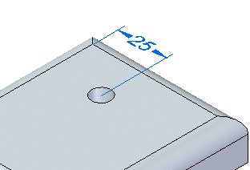
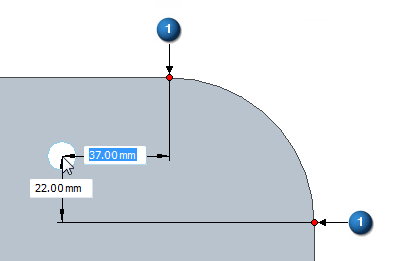
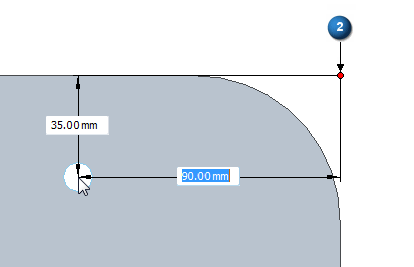
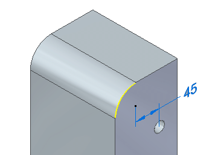
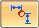
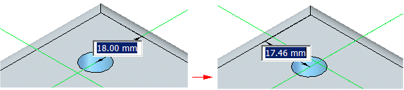

Precise placement
When locked to a plane in the hole placement workflow, dimensions may be placed on each occurrence dynamically.
Press E to create dimensions from the center of the hole to the closest edge endpoint.

When in the endpoint mode E (1), pressing J changes to intersection mode (2).


Press C to create dimensions from the center of an existing circle.

Before the hole is placed, you can type a dimension value and the dynamic movement is locked to the defined value. You can redefine the dimension from the keypoint in a different direction, by either clicking the Toggle Dimension Axis button

on the command bar, or pressing T.
All precise placement dimensions are maintained as PMI dimensions after the hole is placed.